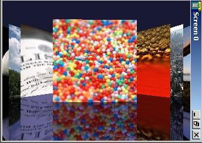

CoverFlow: using ScreenPlay
This example application demonstrates creating semi-transparent
UI content over OpenVG content that is rendered to a composition surface.
This is only possible when ScreenPlay is enabled.
Download
Click on the following link to download the example: GraphicsShell.zip
Click: browse to view the example code.
The example
is located in the examples\Graphics\CoverFlow directory.
Description
This code implements a 'coverflow' application. It uses OpenVG to
display images while semi-transparent or transparent windows and controls
are used to display overlaid content. The application does the following:
- Creates an EGL drawing surface by calling the eglCreateWindowSurface() function.
- Converts bitmap cover images to OpenVG images.
- Applies OpenVG transformations on the converted OpenVG images.
- Draws the transformed images on the EGL surface by calling the vgDrawImage() function.
- Draws the mirror image of bitmap cover images on the surface.
- Displays an incoming call animation and a moving ticker window
in a separate active object. These are activated when relevant key
press events are detected. It uses the invalidate and re-draw pattern
of the window server to draw the contents on the window.
The ScreenPlay graphics architecture uses a composition
engine to display multiple overlaid windows. The composition engine
takes multiple overlaid surfaces as input and creates a single screen
buffer. For more information, see
Graphics Composition and
The ScreenPlay
Graphics Architecture.
ScreenshotsFigure 1. Basic Screenshot

Figure 2. Screenshot showing ticker and incoming call animation
Figure 3. Screenshot showing the absence of the mirror surface
Class
Summary
These are the principal classes used in this example:
- CCoverFlowAppUi
- CEGLRendering
- MEngine
- CDialogBox
- COpenVGEngine
- CTicker
- CLoader
Design
and Implementation
Figure 4. UML class diagram
Building
and running
The Symbian build process describes how to
build an application.
Configuration
settings for running the example on an Emulator or H4 board
Change the WINDOWMODE parameter to Color16MAP in epoc32\release\winscw\<udeb/urel>\z\system\data\wsini.ini (epoc32\data\z\system\data\wsini.ini on the H4 board).
The application
cannot run if ScreenPlay is disabled. If it is not already enabled,
you need to enable it. See Enabling the Graphics
Architecture Variants for more information.
(Emulator only):
Copy all .mbm (image) files from the coverflow\gfx\call directory to the epoc32\release\winscw\<udeb/urel>\z\resource\apps directory.
Performance
can be boosted significantly by switching to portrait mode, which
is the native mode for the LCD controller. To enable portrait mode,
uncomment the following line in the coverflowapp.mmp:
// MACRO PORTRAIT_MODE
Add the following
configuration statements to the epoc32\data\epoc.ini to run the example in portrait mode.
screenwidth 240
screenheight 320
fasciabitmap null.bmp
screenoffsetx 0
screenoffsety 0
Building the ROM Image
Perform the following steps to build the ROM image:
- Ensure that the
SD card is connected and its drive letter is F:.
Create the ROM
image using the following command from epoc32\rom\:
> buildrom.cmd -D_EABI=ARMV5 -DRVCT -DEXCLUDE_JAVA -DSYMBIAN_BASE_USE_GCE -DSYMBIAN_GRAPHICS_USE_GCE -nosymbols -nofm h4hrp techview coverflowapp.iby -osys$rom.bin && zip sys$rom.zip sys$rom.bin && copy /y sys$rom.zip f:\ && chkdsk f:
- Copy all .mbm (image) files from coverflow\gfx\call toe:\resource\apps of the SD card. Copy the covers.mbm file from \epoc32\data\z\resource\apps\covers.mbm to e:\resource\apps\of the SD card.
Running
and using the example
- Run coverflowapp.exe.
- Press the Left
or the Right arrow key to navigate through the covers.
- Press the Down
arrow key to show or hide the Ticker at the bottom of the screen.
- Press the Up arrow
key to show or hide the incoming call animation.
- Press the Tab key
to show or hide the semi-transparent green window around the incoming
call animation.
- Press the Backspace
key to show or hide mirror images of the covers.
Copyright ©2010 Nokia Corporation and/or its subsidiary(-ies).
All rights
reserved. Unless otherwise stated, these materials are provided under the terms of the Eclipse Public License
v1.0.